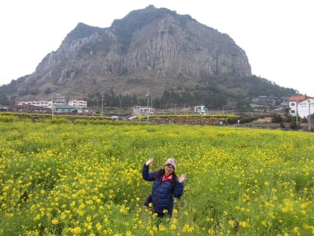
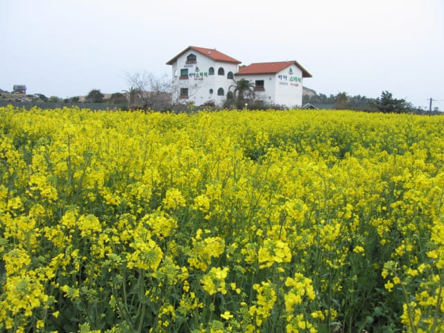

在沙溪港吃完晚餐, 沿道路步行往山房山下的巴士站, 無意中經過一幅面積很大、黃澄澄的油菜花田, 這時所有旅客已經離去, 感覺是山房山下最漂亮的油菜花田。離開前終於看到最美麗動人的山房山景色, 走了那麼多路來到這裡, 總算不枉此行啦!


沿油菜花旁的道路繼續往上走, 來到一條橫向的馬路, 感覺巴士應該經過這裡的。
我們只知道山房山寺下有一個702號巴士站, 所以打算走往那裡乘巴士返回中文區的。但望望左邊, 發現不遠處有一個巴士站, 便匆匆走去看看。
很順利找到返回酒店的702號巴士站
來到巴士站, 站名是「사계리동동」, 馬上看看巴士路線。當看見702號巴士時, 原來不用走到山房山寺下的巴士站, 走少很多路, 十分高興, 總算很順利的找到返回酒店的巴士站。
望望手錶, 約下午六時四十分, 看不懂巴士時刻表, 不知道下一班巴士的時間, 唯有坐在巴士站內的櫈子等候。看見巴士站還有另一位當地男乘客在等候, 估計他也是乘搭702號巴士! 如果是, 應該很快有巴士來吧!

等了一會, 天色漸漸昏暗。約下午六時五十分, 一輛巴士從遠處閃出, 看見那男乘客站起來, 我們以為是702號巴士, 滿心歡喜的馬上站起來準備上車, 巴士漸漸靠近, 看清楚, 是 750-1 巴士!
巴士走後, 巴士站內只有我們兩個傻瓜。過了一會, 黑幕突然拉下, 四周一片漆黑, 只有山房山那裡的幾粒微弱燈火, 在黑夜中閃動, 提醒我們仍然活在世上。
晚間鄉郊的天氣下降得很快, 漸漸覺得寒冷, 寒氣刺骨, 唯有瑟縮在巴士站內。
等呀~~~ 等……, 都沒有巴士駛來, 信心開始動搖, 她不斷自言自語, 又好像在問我的: 702號巴士會否在什麼時間後不經過這裡? 巴士會否在什麼時間後停駛? 會否沒有巴士架……..。
聽了她的問題, 馬上再看看巴士站上的時刻表, 好像是約每十五分鐘便在總站發車一次, 按理應該等約十五分鐘便有車才對的! 但看看手錶, 已經是晚上七時十分, 已經等了半小時了! 這時, 我也漸漸懷疑, 702號巴士會不會在什麼時間後行駛另一條路線, 不經過這裡的! 的確, 韓國很多巴士路線都是這樣設計的!
但是, 現在還有什麼選擇呢? 唯有繼續等。
又等了十多分鐘, 突然間, 遠處路中有一顆分外明亮的燈光, 越來越近, 越來越炫眼, 漸漸看到車頭的巴士號碼, 是 702 號巴士呀! 高興得喊了出來, 不斷向巴士揮手。
登上了巴士, 車廂內很多乘客, 部份是行山的旅客。
巴士行駛了約二十分鐘, 當看見右邊窗外我們熟悉的「歡迎中文觀光」巨型風車, 便馬上按鈴示意下車。巴士約晚上七時四十五分抵達酒店附近的中文郵局巴士站 (중문우체국)。
下了車, 沿馬路步行返酒店, 經過一間店舖, 看見橙每個只是486韓元, 便打算買兩個吃, 怎料付錢時, 老闆說是4,860韓元! 太貴了! 當然不買啦! 離開時再看看, 明明是486韓元的!
心有不甘, 便走到酒店附近的一間超級市場, 發覺橙的價錢和剛才的店舖相差不大, 當然同樣沒有買, 這時才知道濟州島的橙是很貴的!
接著慢慢步行返回酒店, 在一樓大堂的公用電腦上網, 立即看看韓國氣象廳 (http://www.kma.go.kr)的天氣預測, 明天和未來幾天仍然都是密雲有雨, 天氣寒冷, 看來明天攀登漢拏山這行程要取消了!
今晚是在中文區最後的一晚, 如果取消明天攀登漢拏山這行程, 便可能考慮提早乘巴士往下一個停留城市 – 西歸浦市區。